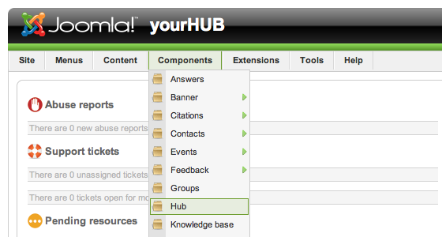
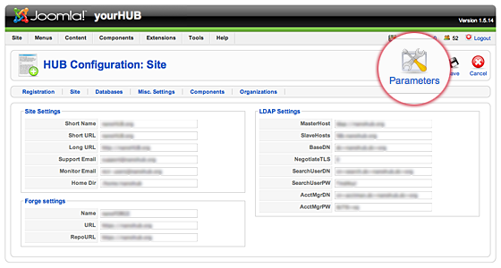
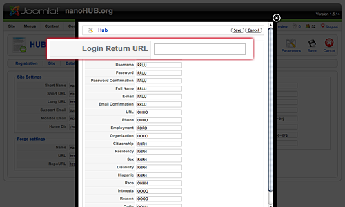
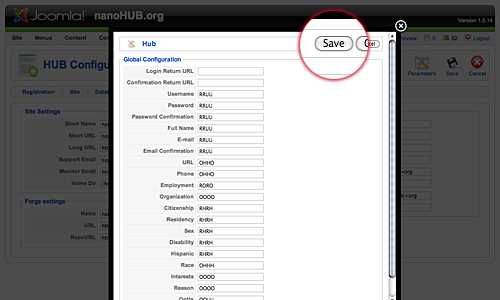

Hub managers
Global configuration
Site-wide settings live on one screen, Site > Global Configuration. It covers the site's name and defaults, the mail transport, sessions, caching, search engine friendly URLs, the API rate limits, the permission rules that sit above every component, and the text filters applied to user input.
Most of these settings are chosen once, during installation, and then left alone. Changing the database, session, or cache settings on a running hub can take the site offline.
The screen
Open Site > Global Configuration from the administrator menu.
Toolbar
- Save — write the changes and stay on the screen.
- Save & Close — write the changes and return to the control panel.
- Cancel — discard the changes and return to the control panel.
- Help — open the screen's help text.
Settings are written to plain PHP files under app/config/, one file per
group: app.php, mail.php, session.php, cache.php, seo.php,
meta.php, offline.php, database.php, ftp.php, and rate_limit.php.
The administrator account needs write access to that directory or the save
fails with a "could not write" error.
Tabs
| Tab | Panels |
|---|---|
| Site | Site Settings, Offline Settings, Metadata Settings, SEO Settings, Cookie Settings |
| System | System Settings, Hub Secret, Debug Settings, Cache Settings, Session Settings |
| Server | Server Settings, Location Settings, Message Queue Settings, Database Settings, Mail Settings |
| API | Ratelimit: Short, Ratelimit: Long |
| Permissions | Permission Settings |
| Text Filters | Text Filter Settings |
A hub can add its own configuration groups by dropping a file into
app/config/. Any group the form does not already know about gets its own
tab at the end of the list, named after the file, with a plain text box for
every key it contains.
Site
Site Settings holds the settings a visitor notices first.
| Field | What it does |
|---|---|
| Application Environment | Production, Production - Cloud, Staging, Testing, or Development. Controls how much detail errors show. |
| Site Name | The hub's name. It appears in page titles, in mail subjects, and wherever a component asks for the site name. |
| Site Code | Short code identifying the installation. |
| FQDN | The hub's fully qualified domain name. |
| Default Editor | The editor plugin used for rich text. The field's own fallback is tinymce, but that only applies when the setting is absent; the installer always writes ckeditor, so a stock hub runs CKEditor. |
| Default Captcha | The captcha plugin used where a component does not name its own. |
| Default Access Level | The viewing level given to new content. |
| Default List Limit | Rows per page in administrator lists. Defaults to 20. |
| Default Feed Limit | Items in a syndication feed. Defaults to 10. |
| Feed email | Which address a feed publishes, the author's or the site's. |
Offline Settings takes the site offline with a message and an optional
image. Metadata Settings sets the site-wide description, keywords,
robots directive, and whether the generator and version are advertised.
SEO Settings turns search engine friendly URLs on, adds the rewrite and
suffix behaviour, and controls whether group URLs are rewritten too.
Cookie Settings sets the cookie domain and path, and the JWT RSA public
key used to validate tokens.
System
System Settings sets the log folder, the help server, and whether the Hubzero API web services are enabled.
Hub Secret has one control, Reset Hub Secret?. The hub secret signs tokens the hub issues.
Debug Settings turns on the system profiler, the language debugger, and POST data logging. Cache Settings chooses off, conservative, or progressive caching, the cache handler, and the cache lifetime; a memcache handler adds host, port, persistence, and compression fields. Session Settings sets the session lifetime in minutes and the session handler.
Server
Server Settings covers the temp folder, gzip page compression, error reporting, and Force SSL — off, administrator only, or the entire site. Location Settings has one field, Server Time Zone.
Database Settings and Mail Settings show the connection the site is already using. From email and From Name are the identity every mail the hub sends goes out under; several components default their own notification addresses to this value.
Message Queue Settings points at the queue host, port, user, and password used by the background workers.
API
Two panels, Ratelimit: Short and Ratelimit: Long, each a period in minutes and a request limit. The defaults are 120 requests per minute and 10,000 requests per day.
Permissions and Text Filters
Permissions is the site-wide rules grid: for each user group, the default answer to each core action. Components inherit these rules and can override them in their own Options screen. Text Filters decides, per group, which HTML survives when a member submits content.
What moved where
| Old Hub setting | Now |
|---|---|
| Short Name | Site Name, on the Site tab. {xhub:getcfg hubShortName} returns it. |
| Short URL, Long URL | Gone. The hub derives its URL from the request; {xhub:getcfg hubShortURL} returns the live base URL. |
| Support Email | Each component that sends mail now carries its own address list, defaulting to the global From email. For tickets, see the Support component's options. |
| Monitor Email | Gone. |
| Home Dir | Home directory path, in the Members component's options. |
| Forge Settings (Name, URL, RepoURL) | Gone. The Tool Forge is no longer configured from the CMS. |
| LDAP Settings (MasterHost, SlaveHosts, BaseDN, NegotiateTLS, SearchUserDN, SearchUserPW, AcctMgrDN, AcctMgrPW) | Site > LDAP, then the Options button. See LDAP. |
LDAP
LDAP is configured from Site > LDAP, which is the System component's LDAP screen. The screen itself exports members and groups to the directory and deletes them from it; the connection settings are behind the Options button in its toolbar.
The fields are LDAP Primary Host URI (default ldap://localhost),
LDAP Secondary Host URI, LDAP Base DN, LDAP Search DN, LDAP
Search Password, LDAP Manager DN, LDAP Manager Password, and Use
LDAP TLS. They are listed with their defaults in the
System component reference.
Where members land after signing in
There is no Login Return URL setting. A member who signs in without a
return parameter goes to their account page, /members/myaccount.
To send them somewhere else, edit the menu item that points at the login view:
- Go to Menus and open the menu item whose type is the login view.
- In the Basic options, set Login Redirect.
- Set Logout Redirect in the same place if you want a different destination after signing out.
A path that starts with / is treated as internal and the hub prefixes the
site root. The same menu item also carries the login and logout
descriptions and images.
// Get the default return value
$defaultReturn = Route::url('index.php?option=com_members&task=myaccount');
$description = '';
if ($menu && isset($menu->params) && is_object($menu->params))
{
$defaultReturn = $menu->params->get('login_redirect_url', $defaultReturn);
// Assume redirect URLs that start with a slash are internal
// As such, we want to make sure the path has the appropriate root
$root = Request::root(true);
if (substr($defaultReturn, 0, 1) == '/'
&& substr($defaultReturn, 0, strlen($root)) != $root)
{
$defaultReturn = rtrim($root, '/') . $defaultReturn;
}
$description = $menu->params->get('login_description');
}
$defaultReturn = base64_encode($defaultReturn);
Older screenshots




Rewritten and checked against 2.4-main @ 123ea53b14 on 2026-09-09.